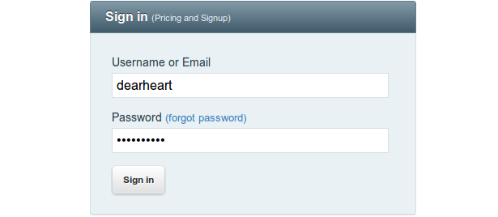
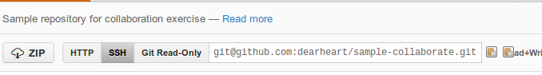
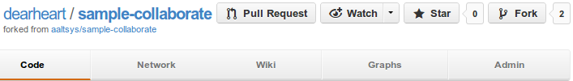
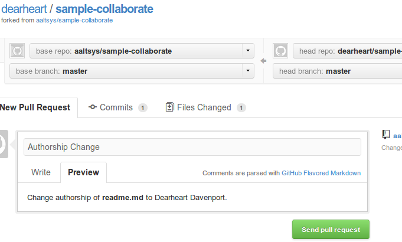

Repository Exercise¶
This exercise requires using a web browser, a text editor, and a console window for the system command prompt. As with modern open source software development practices, commands use (U/L)inux syntax. Open windows on the local desktop for the web browser, console, and editor before starting.
Part 1. Local Setup Commands¶
Note
Use your command line, console, or terminal to enter commands in this section.
Create a Project Folder¶
To create a projects folder, at a terminal prompt type the following commands:
mkdir -p ~/Projects
cd ~/Projects
Generate Missing SSH Keys¶
Type the following command to generate ssh keys for a user, if missing:
if [ ! -f ~/.ssh/id_rsa ]; then ssh-keygen -N '' -f ~/.ssh/id_rsa; fi
Copy SSH Key to Clipboard¶
Choose a command from the following list to copy your SSH key to the clipboard:
| Operating System | Command |
|---|---|
| KUbuntu Linux | cat ~/.ssh/id_rsa.pub | xclip |
| Mac OS-X | cat ~/.ssh/id_rsa.pub | pbcopy |
| Cygwin | cat ~/.ssh/id_rsa.pub | putclip |
Part 2. Configure GitHub Account¶
Note
Use your web browser (Chrome, Firefox, or Safari) to access web services.
Login to GitHub¶
In the web browser, go to GitHub: https://github.com/login. Enter your Username and Password, then click Sign In.
Add SSH Key on Github¶
- Click the wrench to the right of your name, Account Settings,
- Then select SSH Keys from the settings menu on the left.
- On the SSH Keys bar, click the Add SSH key button.
- Click in Key, and press <Ctrl-V>.
- Click in Title, and enter the workstation@username and date.
- Click the button Add key to finish.

Verify ssh with login¶
Back to the console, enter command:
ssh -T git@github.com
At the “Are you sure ... (yes/no)?” question, type yes, press <Enter>.
You should get a response that you have successfully authenticated:

Part 3. Fork GitHub Repository¶
Note
Use your web browser (Chrome, Firefox, or Safari) to access web services.
There is no need to start from scratch when creating a documentation project. Instead, clone or fork someone else’s open source work. With your GitHub account,
- visit the AAltsys GitHub page
- find the sample-collaborate repository and click the name,
- then click the fork button at the top right of the page.

GitHub will make a copy of the sample-collaborate repository for you, and then switch to view your copy.
Part 4. Make Local Clone¶
Note
Use your command line, console, or terminal to enter commands in this section.
Once you own a repository on GitHub, you will want to clone it. The GitHub repository is remote, and cloning makes a local copy which you can edit. Here is the console command:
git clone (link_to_your_project) ~/Projects/sample-collaborate
There are two parameters to the git clone command. First is your project name, which is the text following “Git Read-Only” in the image below. (But copy the text from your fork of the repository please, so it will have your name instead of mine.) The second parameter is the folder name to create for the project.
Part 5. Edit Local Readme¶
Note
Use the file manager, the editor, and the web browser in this section.
From your file mamanger, right-click on file ~/Projects/readme.md and open it with your system editor. (Possible editors are listed below.)
| Operating System | Command |
|---|---|
| KUbuntu Linux | From file manager, open with Kate |
| Mac OS-X | From Finder, open with TextEdit |
| Cygwin | From Computer, open with Notepad |
Add Your Name¶
- On the top line, replace Your Name Here with your actual name, or the names of your team members
- Press <Ctrl-A>, <Ctrl-C> to copy the markup text to your clipboard.
Test changes in Slekx¶
- In the web browser, open http://old-wp.slekx.com/the-markdown-tutorial/
- Click in the text of the left pane in the Slex editor
- Press <Ctrl-A>, <Ctrl-V> to paste your markup document
- View your changes in the Interactive editor right pane
- Edit the left-side text for corrections, view the right results
- When satisfied, press <Ctrl-A>, <Ctrl-C> to copy the text.
Paste back to editor¶
- Click back in the edit text of the local editor on your desktop
- Press <Ctrl-A>, <Ctrl-V> to paste your markup text back
- Press <Ctrl-S> or click on the Save button to save your document.
Part 6. Commit and Push¶
Note
Use your command line, console, or terminal to enter commands in this section.
Commit Changes¶
At the command line, enter the following statements:
git add .
git status
git commit -m "Added my name to readme"
Part 7. Send a Pull Request¶
Note
Use your web browser (Chrome, Firefox, or Safari) to access web services.
View remote project changes¶
Refresh your GitHub project page in the web browser to display the new readme.md in your project.
Submit a pull request¶
To the right of the project title, click the Pull Request button.
On the resulting page, enter a title and a request message, using Markdown syntax if desired. Click the Send pull request button to complete the request, as shown in the image below:
